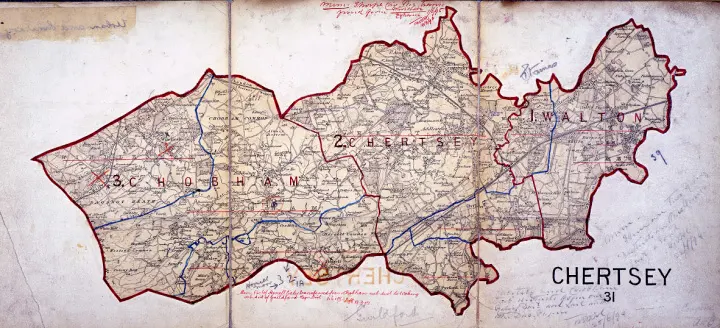

Write what you know
Record family memories, certificates, photos, addresses, and dates. Note where each fact came from.
Family History Beginners' Hub
Choose one ancestor who lived in England after 1837. Write down the name, approximate birth year, place, spouse, children, and anything your family already knows. A small, focused question is easier to answer than trying to research a whole tree at once.
Record family memories, certificates, photos, addresses, and dates. Note where each fact came from.
Use the GRO index or FreeBMD to find a birth, marriage, or death entry. Pay close attention to the registration district and quarter.
A certificate can give names, places, occupations, and relationships that help you move back to the next generation.
Search census records to place the family together. Compare ages, birthplaces, and occupations with the certificate.
Use the menu to see which record might help with your current question.
